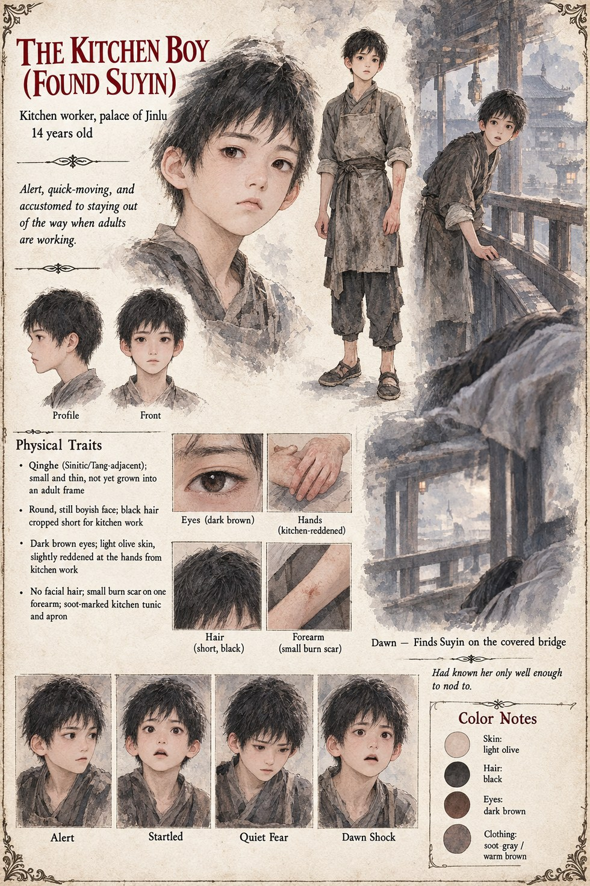

The Kitchen Boy
Kitchen Worker, Palace of Jinlu · 14 years old
A fourteen-year-old kitchen worker who had known Suyin only well enough to nod to in a corridor, and who happens to cross the covered bridge early enough one winter morning to be the one who finds her. He is alert and quick-moving by long habit — a kitchen boy learns fast to stay out of the way when adults are working — and it is that same habit that has him on the bridge before anyone else that day.